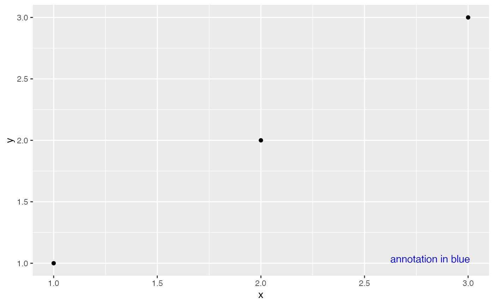

The underlying structure of a ggplot2 theme is defined via the element tree, which specifies for each theme element what type it should have and whether it inherits from a parent element. In some use cases, it may be necessary to modify or extend this element tree and provide default settings for newly defined theme elements.
Usage
register_theme_elements(..., element_tree = NULL, complete = TRUE)
reset_theme_settings(reset_current = TRUE)
get_element_tree()
el_def(class = NULL, inherit = NULL, description = NULL)Arguments
- ...
Element specifications
- element_tree
Addition of or modification to the element tree, which specifies the inheritance relationship of the theme elements. The element tree must be provided as a list of named element definitions created with el_def().
- complete
If
TRUE(the default), elements are set to inherit from blank elements.- reset_current
If
TRUE(the default), the currently active theme is reset to the default theme.- class
The name of the element class. Examples are "element_line" or "element_text" or "unit", or one of the two reserved keywords "character" or "margin". The reserved keyword "character" implies a character or numeric vector, not a class called "character". The keyword "margin" implies a unit vector of length 4, as created by
margin().- inherit
A vector of strings, naming the elements that this element inherits from.
- description
An optional character vector providing a description for the element.
Details
The function register_theme_elements() provides the option to globally register new
theme elements with ggplot2. In general, for each new theme element both an element
definition and a corresponding entry in the element tree should be provided. See
examples for details. This function is meant primarily for developers of extension
packages, who are strongly urged to adhere to the following best practices:
Call
register_theme_elements()from the.onLoad()function of your package, so that the new theme elements are available to anybody using functions from your package, irrespective of whether the package has been attached (withlibrary()orrequire()) or not.For any new elements you create, prepend them with the name of your package, to avoid name clashes with other extension packages. For example, if you are working on a package ggxyz, and you want it to provide a new element for plot panel annotations (as demonstrated in the Examples below), name the new element
ggxyz.panel.annotation.
The function reset_theme_settings() restores the default element tree, discards
all new element definitions, and (unless turned off) resets the currently active
theme to the default.
The function get_element_tree() returns the currently active element tree.
The function el_def() is used to define new or modified element types and
element inheritance relationships for the element tree.
Examples
# Let's assume a package `ggxyz` wants to provide an easy way to add annotations to
# plot panels. To do so, it registers a new theme element `ggxyz.panel.annotation`
register_theme_elements(
ggxyz.panel.annotation = element_text(color = "blue", hjust = 0.95, vjust = 0.05),
element_tree = list(ggxyz.panel.annotation = el_def("element_text", "text"))
)
# Now the package can define a new coord that includes a panel annotation
coord_annotate <- function(label = "panel annotation") {
ggproto(NULL, CoordCartesian,
limits = list(x = NULL, y = NULL),
expand = TRUE,
default = FALSE,
clip = "on",
render_fg = function(panel_params, theme) {
element_render(theme, "ggxyz.panel.annotation", label = label)
}
)
}
# Example plot with this new coord
df <- data.frame(x = 1:3, y = 1:3)
ggplot(df, aes(x, y)) +
geom_point() +
coord_annotate("annotation in blue")

# Revert to the original ggplot2 settings
reset_theme_settings()